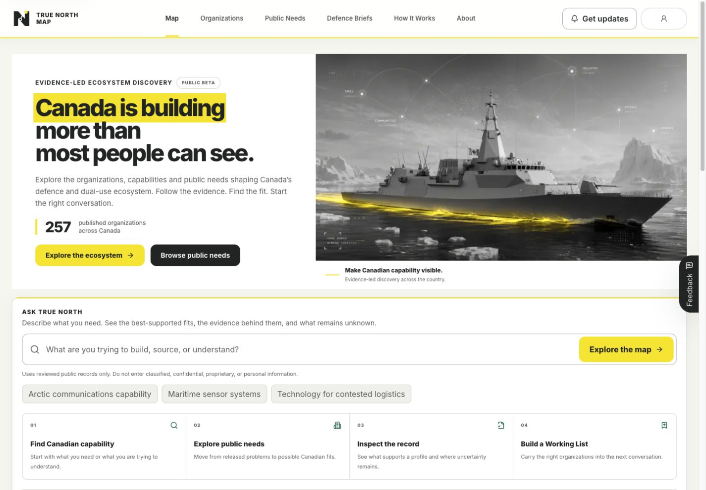
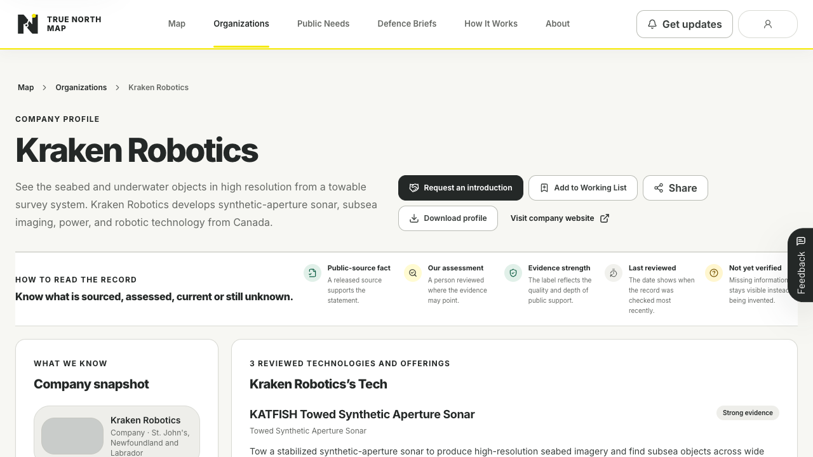
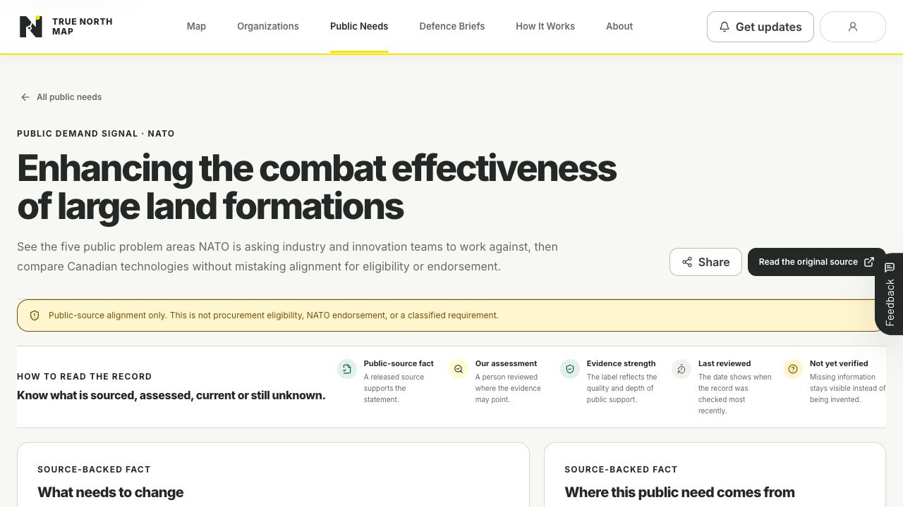
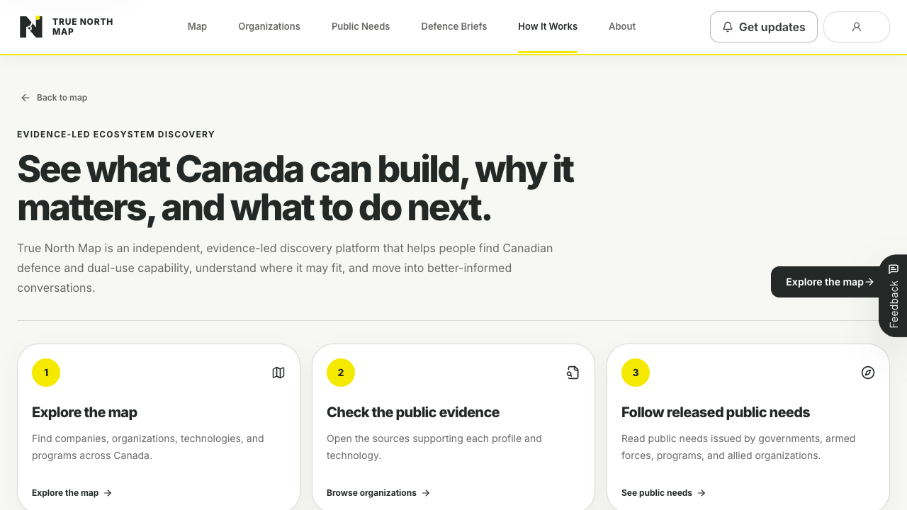
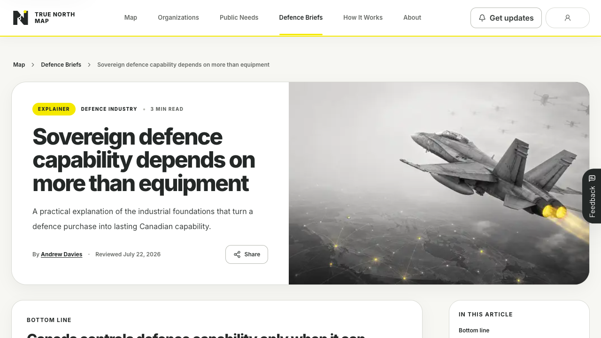

TRUE NORTH
MAP
MAP
The system
behind the map.
Product intent, evidence architecture, research operations and production engineering behind Canadian defence and dual-use discovery.
Product intent, evidence architecture, research operations and production engineering behind Canadian defence and dual-use discovery.
True North Map is not a scraped list of companies. It is a live, evidence-led discovery system that connects Canadian organizations and technologies to places, missions, released public needs and reviewable sources.
Canonical data, field evidence, typed research, human review, production controls and a constrained intelligence layer.
This document explains the intent, judgment and operating system behind that promise.
The story begins with the national visibility problem, follows the public product, then opens the research, evidence, automation and engineering layers underneath it.
Current production routes, canonical governance, production-aligned code, typed research contracts and live public counts were reviewed on 28 July 2026. Screens are real product captures. Private operational detail is intentionally summarized.
Andrew Davies is a veteran and former Combat Systems Engineering Officer whose work spans defence, marine technology, civilian industry, project delivery and ecosystem engagement.
Returning to defence work in a period of renewed national urgency revealed a striking contradiction: Canada had talented engineers, companies, programs and ambition, but no shared picture of what was ready to build.
The challenge is not simply missing data. It is fragmentation across company sites, regional networks, government programs, public documents, announcements and individual relationships.
The same question is repeatedly rebuilt across search engines, spreadsheets and personal networks.
A list of names does not explain what a technology can do or why someone should care.
Marketing claims, public evidence, editorial interpretation and unknowns are often mixed together.
True North Map helps people find Canadian defence and dual-use capability, understand where it may fit and move into better-informed conversations.
Every feature should make an organization, technology, need, relationship, source or uncertainty easier to see.
Records are connected to technologies, regions, missions, Public Needs and evidence.
It does not rank vendors, validate eligibility or imply an opportunity exists.
Public evidence and human review are the source of trust.
The product is intentionally broad enough to create a shared picture, but focused enough to help a real person decide what to inspect or who to contact next.
Move from a mission, capability or geography to organizations with visible evidence and possible relevance.
Compare offerings, maturity, technical areas, public needs and coverage gaps.
Understand regional clusters, programs, research centres, accelerators and national relationships.
Claim, correct or suggest a profile while retaining editorial review and evidence standards.
Value appears when someone recognizes an opportunity sooner, finds a better partner, reduces research time or brings the right Canadian capability into the room.
The product’s strategic wedge is mission-led discovery, not passive browsing.
Build the market picture.
Inspect technology, public sources and uncertainty.
Save, share, export, correct or request an introduction.
The homepage reveals the scale of the ecosystem immediately, then lets users narrow by place, organization type, technology, maturity, program or released need.

Each dossier separates what is known, what the organization offers, where it may help, what supports the record and what still needs verification.

Design principle: visual confidence must never exceed evidentiary confidence.
A Demand Signal is admitted only when a released public source identifies the issuer, need, outcome and inspectable source passage. Technology connections are then reviewed as possible relevance, not procurement status.

A government, armed force, program or allied organization released the public record.
A person reviewed why a published technology may be relevant and what evidence supports that interpretation.
A reviewed public-source assessment is not procurement eligibility, endorsement, customer interest or classified demand.
Organizations do not sit alone. They are connected to the technologies they offer, the places they operate, the missions they may support, the released needs they may address and the evidence behind each claim.
What an official or released source actually says.
A reviewed interpretation of possible relevance.
What remains missing, stale, thin or unverified.
A question such as “who can support modular containerized naval systems?” is answered by selecting from published records, ranking known candidates and returning visible evidence and uncertainty.
Provider timeouts, refusals, missing access, rate limits and invalid output fall back to deterministic discovery rather than breaking the map.
True North Map stops short of becoming a CRM. It supports the lightweight actions that turn research into engagement without collecting private relationship histories.
Save relevant organizations and technologies privately.
Carry evidence into a brief, PDF or filtered CSV.
Claim, amend or suggest a profile for review.
Request a human-brokered introduction.

No outbound sequencing, automated introductions, relationship scoring or sales pipeline management.
Reduce uncertainty enough to make the next conversation more relevant.
The architecture separates public experience, canonical data, private research, editorial synthesis and operator visibility so no auxiliary workflow can silently become the public record.
Hosting, delivery, DNS, runtime analytics and deployments.
Bounded discovery ranking over known published records.
Replaceable map presentation over standard coordinates.
The database separates identity, technology, demand, location, relationships, sources and review state so each can be maintained without turning a dossier into an unstructured blob.
Companies, accelerators, incubators, research and test centres, investors and funders, ecosystem organizations and government innovation offices.
Mission areas, technical domains, programs and released public needs are connected through reviewable mappings rather than copied prose.
Production Supabase is the sole public source of truth. Seed files, research artifacts, private wiki pages and remembered counts cannot substitute for live canonical records.
The platform does not hide interpretation behind a generic confidence score. It tells the reader what is sourced, what is assessed and what is still incomplete.
Supported by an official or released source, a relevant passage and a field-level citation.
A reviewed interpretation of possible relevance, with visible limits.
Missing, thin, stale or unverified information remains visible rather than being filled.
Unknown remains unknown. The system never displays placeholders such as “YTD,” invented employee counts, unsupported contacts or synthetic organizations.
Seven project-local skills move from coverage gaps to reviewable candidates. Every stage has a narrow job, a typed output and an explicit authority boundary.
Coverage yield, durable evidence, traceability, resumability and reviewer usefulness.
A verified pending item in private Admin Review. It cannot accept or publish.
Broad discovery finds missing organizations. Deep dossiers improve named targets. Signal refresh monitors known records for material changes. All three paths converge on the same review and publication controls.
Enumerate 40-75 prospects across at least six source lanes and carry the strongest evidence-backed candidates forward.
Research one to five named organizations across complementary source lanes.
Inspect balanced sources, extract atomic signals and propose additive updates against a captured baseline.
A weekly broad discovery run and weekday multi-source refresh both stop at private review intake.
Approved operations can update a field or add or update a child. V1 never automates deletion.
A candidate can be researched, validated, staged and even accepted without changing a public record. Publication is a separate human action that applies the reviewed operations atomically.
The private Defence Wiki compiles durable source packets and evergreen concepts. Canadian Defence Briefs translate selected, reviewed material into readable public analysis without exposing raw packets or private notes.

Boundary: newsletter bodies, internal notes, raw packets and compiler output never become public runtime content.
As the corpus grew, the homepage was restructured so breadth remains complete while the first meaningful view stays fast.
The page depended too heavily on complete public data hydration before becoming useful.
Every matching published organization remains available to map and search.
Public reads retry one transient failure and may use the last safe warm snapshot.
Public snapshots, record details and route invalidation use different caching strategies.
Public pages use structured data, canonical metadata, current social cards, internal links and answer-first content. A separate private skill reads owned search evidence and returns recommendations without publishing or modifying the corpus.
No automatic publication. Raw queries, referrals, credentials and provider exports remain local and private.
The system uses layered controls across data, routes, authentication, forms, storage, telemetry and retention. The lookbook describes these controls without exposing operational attack surface.
Published records are readable. Drafts, private actions and telemetry remain restricted.
Admin access is not inferred from public sign-in or user-editable profile data.
Turnstile, honeypots, input limits and rate controls protect public workflows.
Only the application and required external services are permitted.
Raw search text and detailed events expire under published time limits.
Security checks, health tests, logs and a rollback target are part of release work.
Honest assurance: these are implemented application controls. The project does not claim an independent penetration test or formal security certification.
Different communication functions use different providers and reputational boundaries while the production database remains the consent and identity authority.
Monitored True North Map mailbox and operational aliases.
Consent-backed subscriber delivery and lifecycle webhooks.
Branded passwordless and security messages on a dedicated sending domain.
Supabase records affirmative update consent, time and source. MailerLite is the delivery surface, not a second authority.
Users can sign out, switch accounts and delete their private profile data after recent reauthentication.
The project measures meaningful actions and recurring gaps while keeping analytics consent visible, optional and separate from private user workflows.
The learning question: what are people trying to find, where do they get stuck, and which missing records or explanations would make the product more useful?
Material changes are mapped across public UX, data, review, evidence, privacy, analytics, visibility, brand and launch collateral before production.
Public layout work is checked at 390, 768, 1024 and 1440 pixels.
The release runbook records the deployed commit and rollback target.
Completion reports state which checks ran and which did not.
True North Map is operating as a professional public beta. The priority is not another foundational rewrite. It is broader use, stronger coverage and learning from real questions.
Success is a growing public picture that helps more people discover Canadian capability, understand the evidence and begin a more relevant conversation.
Not an official directory or procurement authority.
Claims and assessments remain inspectable.
Coverage expands through questions, corrections and reviewed research.
Explore the map. Follow the evidence. Find the organizations worth speaking with next.
Canada is building more than most people can see.
Make the organizations, technologies, needs, evidence and connections easier to find and understand.
Every architectural, research and governance claim in this lookbook is grounded in the current project contracts or live public product.
The complete dated manifest, exact commit and disclosure rules are preserved in the editable source package at content/lookbook/project-lookbook/sources.md.
The project should be judged by whether it helps people see Canadian capability, inspect the evidence and make a better-informed decision about what to explore next.
Prepared from production-aligned commit 0edc27e and current project sources on 28 July 2026. The public corpus continues to change through human-reviewed publication.